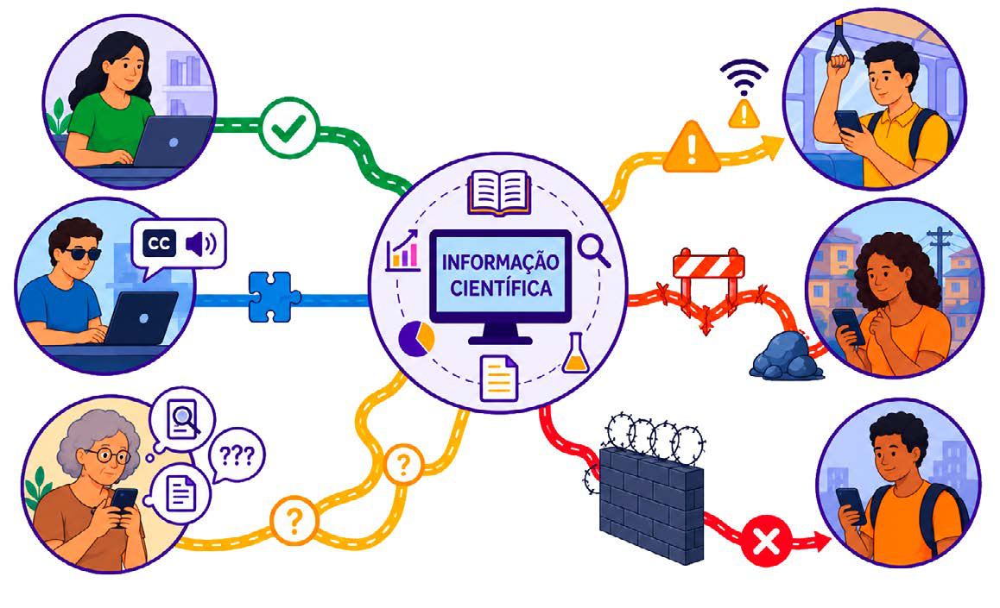
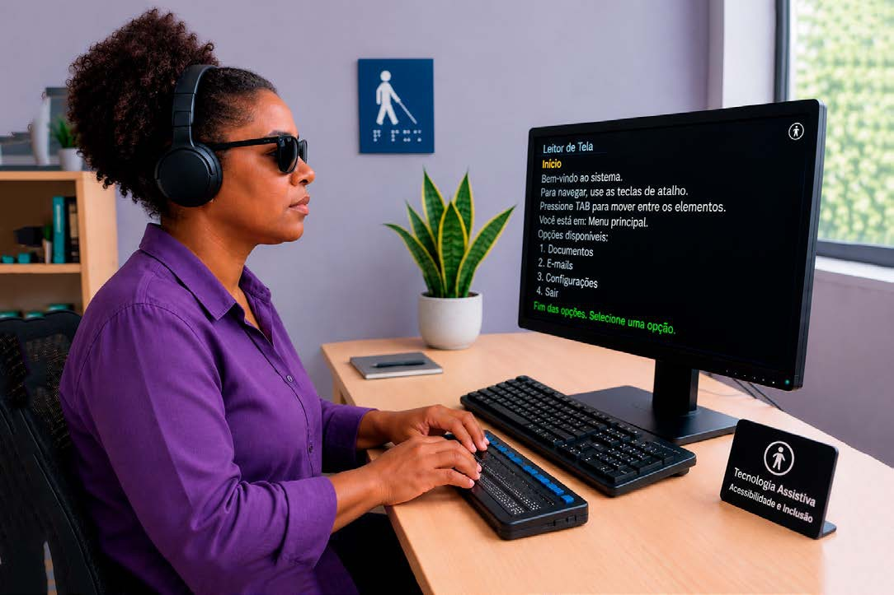

Módulo 4 | Aula 2
Formatos de Produtos para Comunicação de Conhecimento
Caminhos para tornar as evidências mais acessíveis e compreensíveis
Os impactos da desinformação e das desigualdades informacionais
As transformações nas tecnologias digitais ampliaram significativamente a circulação de informações científicas e de conteúdos relacionados à saúde e às políticas públicas. Ao mesmo tempo, esse cenário também favoreceu o aumento da desinformação, da circulação de conteúdos falsos e da disseminação de informações sem base científica.
A desinformação pode comprometer a confiança pública na ciência, dificultar processos de tomada de decisão e influenciar comportamentos individuais e coletivos. Em temas relacionados à saúde, seus impactos podem ser ainda mais graves, afetando práticas de prevenção, adesão a tratamentos e políticas públicas.
Vamos entender um pouco mais sobre desinformação?
Esse não é um fenômeno recente. Ao longo da história, diferentes boatos, informações falsas, rumores e disputas narrativas influenciaram percepções públicas, comportamentos sociais e decisões políticas.
No campo da saúde, um exemplo frequentemente lembrado no Brasil é a Revolta da Vacina, ocorrida no início do século XX, no Rio de Janeiro. Naquele contexto, além das tensões políticas e sociais relacionadas às medidas sanitárias adotadas pelo governo, circularam medos, desconfianças e informações distorcidas sobre a vacinação obrigatória, contribuindo para o surgimento de conflitos e resistência popular.
Mais recentemente, durante a pandemia da covid-19, a Organização Mundial da Saúde (OMS) passou a utilizar o termo “infodemia” para se referir ao excesso de informações circulando rapidamente nas plataformas digitais, dificultando o acesso da população a conteúdos confiáveis e baseados em evidências.
No entanto, compreender a desinformação apenas como um problema de “verdadeiro ou falso” pode simplificar excessivamente um fenômeno muito mais complexo. A circulação das informações é atravessada por contextos culturais, experiências sociais, crenças, valores, desigualdades de acesso, confiança nas instituições e formas como as pessoas se relacionam com os meios de comunicação e as plataformas digitais.
Enfrentar a desinformação não depende apenas de disponibilizar dados científicos corretos. Também é necessário compreender os contextos e os públicos com os quais se deseja dialogar, reconhecendo que processos de comunicação envolvem disputas de sentidos, mediações socioculturais e diferentes formas de apropriação das informações.
Nem todos os grupos sociais têm as mesmas condições de acesso a informações. Diferenças relacionadas a escolaridade, renda, acesso à internet, acessibilidade digital e letramento informacional podem ampliar desigualdades no acesso ao conhecimento científico.

Fonte: Campus Virtual Fiocruz, a partir da ferramenta Chatgpt (2026).
As desigualdades informacionais afetam diretamente a possibilidade de participação social e de uso democrático das evidências científicas. Quando determinados grupos não conseguem acessar, compreender ou utilizar informações confiáveis, ampliam-se barreiras para o exercício da cidadania e do controle social.
A Pesquisa Nacional por Amostra de Domicílios Contínua (PNAD Contínua), realizada pelo Instituto Brasileiro de Geografia e Estatística (IBGE), acompanha informações sobre condições de vida da população brasileira, incluindo acesso à internet e uso de tecnologias digitais.
Segundo a pesquisa, a internet está presente em 93,6% dos domicílios brasileiros e é utilizada por 89,1% da população. Mesmo assim, cerca de 20,5 milhões de brasileiros permanecem sem acesso a ela.
Entre os principais motivos estão baixa escolaridade, idade avançada e dificuldades no uso de tecnologias.
Desse modo, estratégias de comunicação acessível e inclusiva tornam-se essenciais para fortalecer o acesso público às evidências e enfrentar os impactos da desinformação.
A importância da linguagem simples
A linguagem utilizada em produtos comunicacionais influencia diretamente a compreensão das informações e o acesso às evidências científicas. Como já mencionamos, o uso excessivo de termos técnicos, frases longas e estruturas complexas dificulta a leitura e afasta diferentes públicos do conhecimento científico.
A linguagem simples surge como uma estratégia para tornar a comunicação mais clara, objetiva e acessível, desempenhando papel estratégico para ampliar o acesso às evidências científicas, fortalecer a participação social e apoiar processos de tomada de decisão com base em mais informações.
Seu objetivo não é retirar a complexidade dos temas, mas apresentar informações de maneira compreensível para públicos diversos, respeitando diferentes níveis de escolaridade, repertórios e contextos socioculturais.
Utilizar linguagem simples envolve escolhas relacionadas à organização do texto, seleção de palavras, construção de frases mais diretas; uso de exemplos, imagens e recursos visuais que facilitem a compreensão das informações.
No Brasil, esse debate ganhou ainda mais força com a Lei nº 15.263/2025, que institui a Política Nacional de Linguagem Simples. A legislação determina que órgãos públicos utilizem comunicação clara, direta e acessível em textos, formulários, sites e outros materiais destinados à população, fortalecendo o direito à informação e a transparência pública.
Fonte: Magnific (2026).
O Instituto de Comunicação e Informação Científica e Tecnológica em Saúde (Icict/Fiocruz) disponibiliza gratuitamente o Guia de Linguagem Simples, material com orientações para tornar a comunicação mais clara, objetiva e acessível para diferentes públicos.
Lembre-se: linguagem simples não significa “simplificar demais” a ciência. Significa comunicar informações de forma clara, objetiva e acessível para diferentes públicos.
Barreiras de acesso e acessibilidade comunicacional
“Acessibilidade comunicacional” significa reconhecer que o acesso à informação é um direito, mas essa, porém, não é a realidade na qual vivemos. Muitas vezes, os produtos comunicacionais são desenvolvidos sem considerar recursos de acessibilidade.
Pessoas com deficiência visual, auditiva, intelectual ou com dificuldade de leitura podem enfrentar barreiras importantes quando o conteúdo não apresenta legendas, audiodescrição, Libras, linguagem simples ou formato compatível com tecnologias assistivas.
Desenvolver produtos comunicacionais acessíveis envolve adotar estratégias inclusivas desde o planejamento dos conteúdos, considerando recursos de acessibilidade, diversidade de formatos e adequação às necessidades de diferentes públicos.

Fonte: Campus Virtual Fiocruz, a partir da ferramenta Chatgpt (2026).
Acessibilidade comunicacional é um direito garantido pela Lei Brasileira de Inclusão da Pessoa com Deficiência (LBI – Lei nº 13.146/2015). Por isso, recursos como Libras, legendas, audiodescrição, descrição de imagens e adaptação de conteúdos devem ser considerados desde o planejamento dos projetos e incluídos nos orçamentos e planos de comunicação.
Atualmente, existem empresas, consultorias e profissionais especializados em acessibilidade comunicacional preparados para apoiar o desenvolvimento desses recursos em produtos audiovisuais, digitais e educativos.
Além disso, é fundamental envolver pessoas com deficiência nos processos de produção, avaliação e validação dos materiais produzidos. Essa participação contribui para identificar barreiras, aprimorar os recursos utilizados e fortalecer práticas de comunicação mais inclusivas e acessíveis.